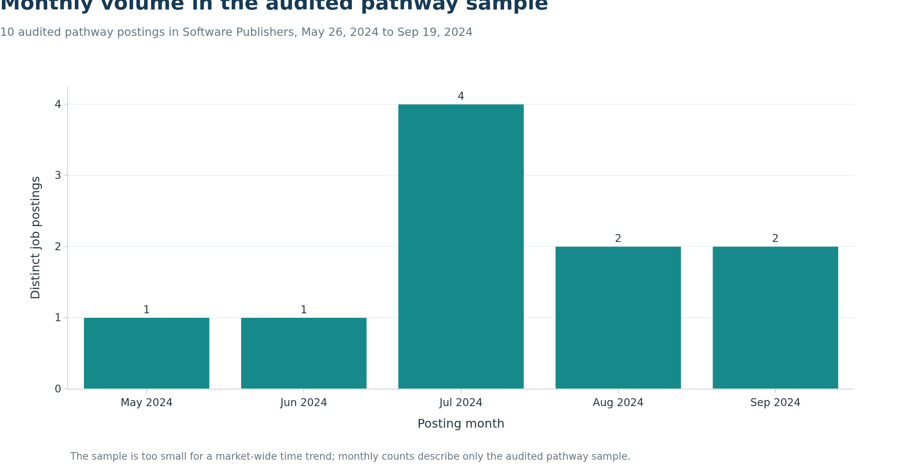
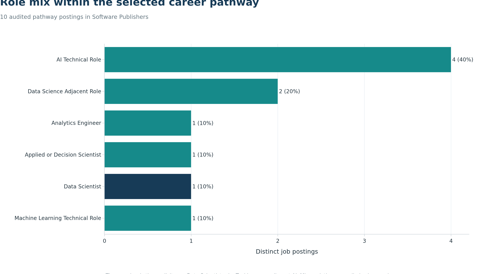
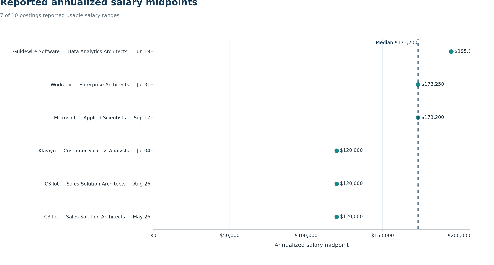
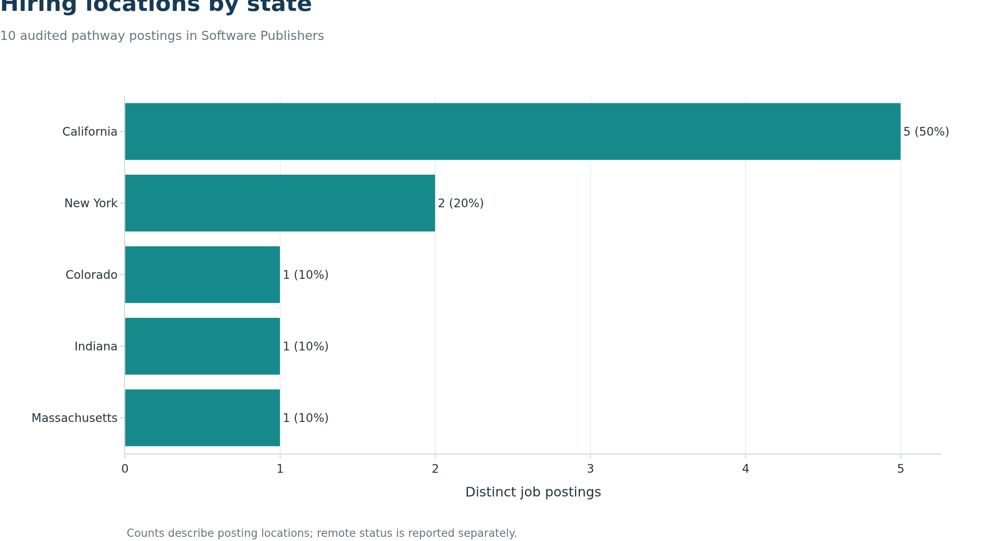
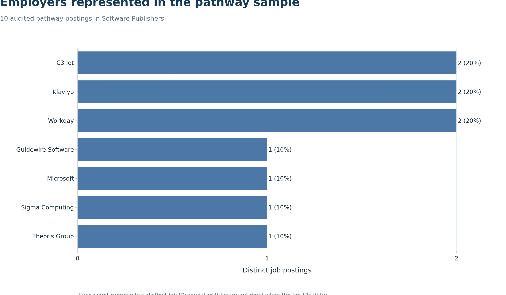
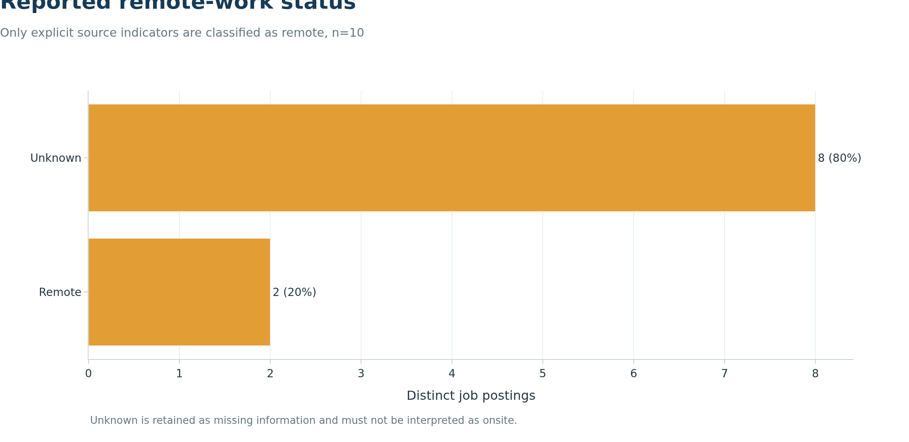
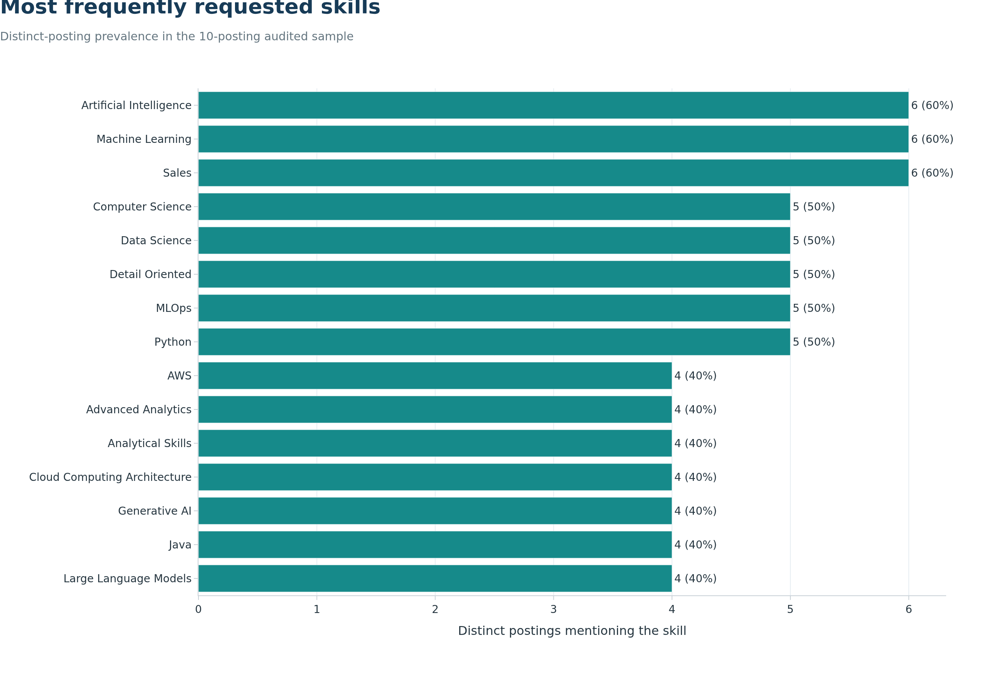
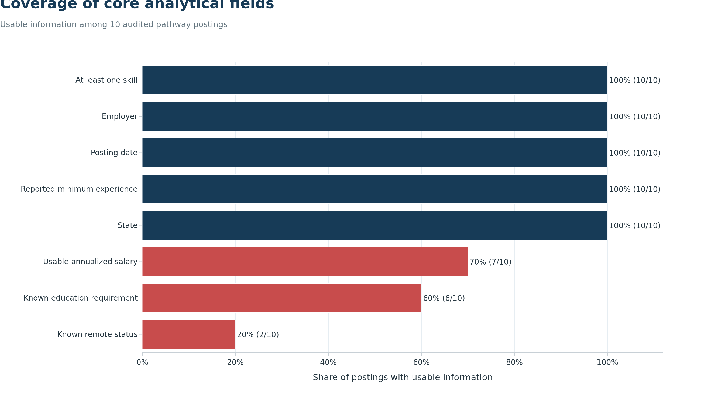

Step 3 Exploratory Data Analysis
The updated Lightcast source contains 72,498 postings. Applying the exact Software Publishers industry code (NAICS 513210), the May–September 2024 date window, and the documented title-based pathway rules produces 10 distinct postings. One posting is an explicit core Data Scientist role and nine are adjacent AI, machine-learning, analytics, or applied-science roles.
This is a narrowly defined pathway sample, not a market-wide estimate. Counts, percentages, salaries, and skill frequencies below describe these 10 audited postings only. Detailed SOC labels were not used as a standalone inclusion rule because they mapped 1,034 of the 1,037 industry postings to Data Scientists even when the job titles did not support that interpretation.
Posting volume over time

July contains four of the 10 retained postings, the largest monthly count in the sample. May and June contain one each, while August and September contain two each. With only 10 observations, these values should not be interpreted as evidence of a broader seasonal or growth trend.
Core and adjacent pathway roles

Only one posting has an explicit core Data Scientist title. The largest segment is AI Technical Role with four postings. Two postings are Data Science Adjacent Roles, and the remaining three adjacent segments contain one posting each. The result supports evaluating adjacent AI and analytics pathways, but those roles remain labeled separately because their responsibilities and skill profiles are not interchangeable with core data science.
Reported salary midpoints

Seven postings report usable annualized salary ranges. Their midpoints range from $120,000 to $195,000, with a median of $173,200. All seven salary observations belong to adjacent roles; the one core Data Scientist posting has no usable salary. The salary results therefore describe reported pay among the adjacent-role subset and should not be presented as an estimate for core Data Scientist positions.
Geographic distribution

California accounts for five postings and New York for two. Colorado, Indiana, and Massachusetts contribute one posting each. This concentration indicates where the audited employers advertised these particular roles; it is not a national state-level demand ranking.
Employers in the audited sample

C3 IoT, Klaviyo, and Workday each contribute two postings. Guidewire Software, Microsoft, Sigma Computing, and Theoris Group each contribute one. Because the sample is small, employer counts are descriptive and may reflect repeated locations or posting dates rather than sustained hiring volume.
Remote-work reporting

Two postings are explicitly identified as remote. The remaining eight have unknown remote status and are not assumed to be onsite. The defensible result is that at least 20% of the audited sample is explicitly remote; the data cannot support a complete remote-versus-onsite comparison.
Skill demand

Artificial Intelligence, Machine Learning, and Sales each appear in six of the 10 postings. MLOps, Python, Data Science, Computer Science, and Detail Oriented each appear in five. The combination of technical and customer-facing skills reflects the sample’s strong representation of solution-architecture and enterprise-AI roles. Skill percentages do not sum to 100% because a posting can request many skills. Equivalent labels such as Generative AI and Generative Artificial Intelligence are consolidated before counting.
Data completeness

Posting date, employer, state, reported minimum experience, and skills are available for all 10 postings. Salary is usable for seven, education for six, and remote status for two. The analysis retains missing values explicitly and does not infer salary, education, or remote status from other fields.